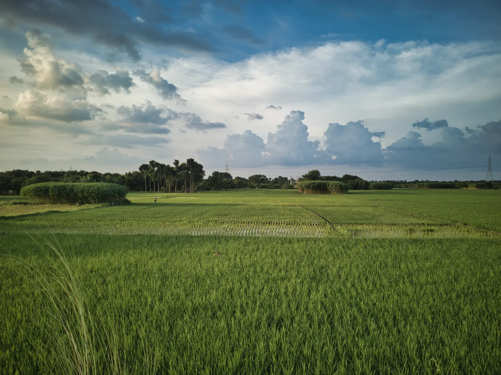

হাসা — মাটি, এবং তার ওপর দাঁড়ানোর অধিকার Hasa — the land, and the right to stand on it
সাঁওতাল সম্প্রদায়ের ইতিহাস ও বর্তমান ভূমি-পরিস্থিতির একটি সৎ বিবরণ, এবং যেসব প্রতিষ্ঠান প্রকৃতপক্ষে আইনি ও মানবাধিকার সহায়তা দেয় তাদের যোগাযোগ তালিকা। An honest account of the Santal community's history and the land conflicts they face — and a directory of the organisations that actually provide legal and human rights support.
আপনি কী খুঁজছেন?What are you looking for?
তিনটি পথ। যেটি আপনার প্রয়োজনের সবচেয়ে কাছাকাছি, সেটি বেছে নিন। Three ways in. Pick whichever is closest to what you need.
-
আমার আইনি সহায়তা দরকারI need legal help
জেলা ও সহায়তার ধরন অনুযায়ী বাছাই করা যায় এমন যোগাযোগ তালিকা — ফোন, ই-মেইল ও ওয়েবসাইটের সরাসরি বোতামসহ। জরুরি সেবা ৯৯৯। A contact directory you can filter by district and type of help, with direct Call, Email and Website buttons. Emergency services: 999.
তালিকা খুলুন →Open the directory → -
ভূমি-অধিকার বুঝতে চাইUnderstand land rights
কোন কাগজগুলো গুরুত্বপূর্ণ, কোথায় যেতে হয়, কী কী ভুল সবচেয়ে বেশি ক্ষতি করে — কাউকে সাহায্য করার ধাপে ধাপে নির্দেশনা। Which documents matter, where to go, and the mistakes that cost the most — a step-by-step guide for supporting someone.
পড়ুন →Read the guide → -
সাঁওতাল ইতিহাস জানতে চাইExplore Santal history
সাঁওতাল হুল ১৮৫৫, ভাষা ও অলচিকি লিপি, সংস্কৃতি, এবং বাংলাদেশে বর্তমান বসতি — সূত্রসহ। The Santal Hool of 1855, language and the Ol Chiki script, culture, and where Santal communities live today — with sources.
পড়ুন →Read →
এ ছাড়া আছে বর্তমান পরিস্থিতি (গোবিন্দগঞ্জের ঘটনাক্রম), সংবাদ ও সূত্র, এবং ছাপানোর লিফলেট। Also here: the situation (a dated Gobindaganj timeline), coverage and sources, and a printable leaflet.
এই সাইট আইনি সহায়তা দেয় না। আমরা আইনজীবী নই এবং কোনো মামলা পরিচালনা করি না। আমাদের কাজ একটাই — আপনাকে সেই প্রতিষ্ঠানগুলোর কাছে পৌঁছে দেওয়া যারা এই কাজ করে। This site does not provide legal aid. We are not lawyers and we do not take on cases. Our only job is to get you to the organisations that do.
আমরা কারও ব্যক্তিগত তথ্য বা মামলার বিবরণ সংগ্রহ করি না। এই সাইটে জমি-সংক্রান্ত সমস্যার বিবরণ জমা দেওয়ার কোনো ফর্ম নেই। এটি ইচ্ছাকৃত — কেন, তা এখানে ব্যাখ্যা করা আছে। We do not collect anyone's personal information or case details. There is no form on this site for submitting a land dispute. That is deliberate — here is why.

{kind=link}
এই সাইট কাদের জন্যWho this site is for
সরাসরি বলা ভালো: গ্রামে বসবাসকারী কোনো পরিবার জমি নিয়ে বিপদে পড়লে সাধারণত ইন্টারনেটে খোঁজ করেন না। তাঁরা যান প্রতিবেশী, স্থানীয় সংগঠন, ইউনিয়ন পরিষদ বা গির্জার কাছে। Plainly: a rural family in a land crisis does not search the internet for help. They go to a neighbour, a local organisation, the union parishad, or the church.
তাই এই সাইট মূলত তাঁদের জন্য যাঁরা মাঝখানে দাঁড়িয়ে সাহায্য করেন — তরুণ স্বেচ্ছাসেবক, এনজিও কর্মী, শিক্ষার্থী, সাংবাদিক ও গবেষক। So this site is built mainly for the people standing in between — youth volunteers, NGO field staff, students, journalists and researchers.
সেই কারণে সহায়তা পৃষ্ঠাটি লেখা হয়েছে “আপনার জমি দখল হলে কী করবেন” হিসেবে নয়, বরং “কারও জমি দখল হলে আপনি কীভাবে পাশে দাঁড়াবেন” হিসেবে। That is why the help page is written as “how to stand beside someone whose land is taken” rather than “what to do if your land is taken.”
আর সরাসরি সম্প্রদায়ের কাছে পৌঁছাতে চাইলে ওয়েবসাইট নয় — ছাপানো লিফলেটটিই কাজের জিনিস। And if you want to reach the community directly, the useful object is not a website — it is the printed leaflet.
সম্প্রদায়ের কণ্ঠস্বরCommunity voices
এই সাইটের লেখা এখন পর্যন্ত পুরোটাই বাইরের সূত্র থেকে সংকলিত — সংবাদ প্রতিবেদন, গবেষণা ও সরকারি নথি। সাঁওতাল লেখক, প্রবীণ ও তরুণদের নিজস্ব বয়ান এখানে নেই, এবং সেটাই এই সাইটের সবচেয়ে বড় ঘাটতি। Everything written here so far is compiled from outside sources — news reporting, research and government documents. Accounts by Santal writers, elders and young people are not here, and that is this site's largest gap.
এটি ইচ্ছাকৃতভাবে ফাঁকা রাখা হয়েছে, কারণ সম্মতি ছাড়া কারও কথা তুলে দেওয়া যায় না। এই অংশে যা যুক্ত হতে পারে: It is deliberately left open, because nobody's words belong here without their consent. What could go in this section:
- সাঁওতাল লেখকদের নিজের নামে লেখা — অনুবাদ নয়, মূল লেখা, লেখকের কৃতিত্বসহ। Writing by Santal authors under their own byline — original text rather than translation, with the author credited.
- সংক্ষিপ্ত সাক্ষাৎকার বা অডিও রেকর্ডিং, লিখিত সম্মতিসহ, এবং বক্তা চাইলে নাম গোপন রেখে। Short interviews or audio recordings, with written consent, and anonymised if the speaker prefers.
- সোহরাই ও বাহা উৎসবের ছবি, যেগুলো সম্প্রদায়ের কেউ তুলেছেন — আলোকচিত্রীর নামসহ। Photographs of Sohrai and Baha taken by someone from the community, with the photographer credited.
শর্ত তিনটি, এবং এগুলোর ব্যতিক্রম হবে না: লিখিত সম্মতি; প্রকাশের আগে অংশগ্রহণকারীর দেখে নেওয়ার সুযোগ; এবং যেকোনো সময় বিনা প্রশ্নে তা সরিয়ে নেওয়ার অধিকার। অংশ নিতে চাইলে যোগাযোগ করুন। Three conditions, and there are no exceptions to them: written consent; a chance for the contributor to see the page before it is published; and the right to have it removed at any time, without giving a reason. To take part, get in touch.
হাসা কারা চালায়?Who maintains Hasa?
একটি ওয়েবসাইট যদি অন্য মানুষকে কোথায় সাহায্য চাইতে হবে তা বলে দেয়, তাহলে সেটি কারা চালাচ্ছে তা জানার অধিকার পাঠকের আছে। If a website tells people where to go for help, readers are entitled to know who is behind it.
- এটি কীWhat this is
- একটি শিক্ষার্থী-পরিচালিত, অলাভজনক তথ্যসূত্র। কোনো প্রতিষ্ঠান, দাতা সংস্থা বা রাজনৈতিক দলের সঙ্গে যুক্ত নয়। A student-run, non-commercial information resource. Not affiliated with any institution, donor or political party.
- উদ্দেশ্যPurpose
- সাঁওতাল ভূমি-অধিকার সম্পর্কিত যাচাইযোগ্য তথ্য এবং সহায়তাদানকারী প্রতিষ্ঠানের যোগাযোগ এক জায়গায় রাখা — এর বেশি কিছু নয়। To keep verifiable information about Santal land rights, and the contacts of organisations that help, in one place — and nothing beyond that.
- রক্ষণাবেক্ষণ ও যোগাযোগMaintained by
- যোগাযোগ: tamimhasanakib@gmail.com Contact: tamimhasanakib@gmail.com
- তথ্য কোথা থেকে আসেWhere the information comes from
- প্রতিটি তথ্যগত দাবির পাশে নম্বরযুক্ত সূত্র দেওয়া আছে; পুরো তালিকা সংবাদ ও সূত্র পৃষ্ঠায়। যোগাযোগের তথ্য প্রতিষ্ঠানের প্রকাশিত ওয়েবসাইট থেকে নেওয়া, দেখার তারিখসহ। Every factual claim carries a numbered citation; the full list is on the coverage and sources page. Contact details are taken from organisations' published websites, with the date accessed.
- ভুল দেখলেCorrections
- ভুল ধরিয়ে দিলে আমরা সূত্র মিলিয়ে দেখি, সংশোধন করি এবং পৃষ্ঠায় তা উল্লেখ করি। কোনো ব্যক্তি নিজের বা পরিবারের সম্পর্কিত কিছু সরাতে বললে কারণ জিজ্ঞাসা না করেই সরানো হয়। অনুরোধ পাঠান। Report an error and we check it against the sources, correct it, and note the correction on the page. If someone asks for material about themselves or their family to be removed, it is removed without asking why. Send a request.
আমরা যা করি নাWhat we do not do
- আমরা সাঁওতাল সম্প্রদায়ের পক্ষে কথা বলি না। আমরা তথ্য ও যোগাযোগসূত্র এক জায়গায় জড়ো করি, এই পর্যন্তই। We do not speak for the Santal community. We gather information and contacts in one place. That is the whole scope.
- আমরা কারও নাম, ছবি বা গ্রামের পরিচয় সম্মতি ছাড়া প্রকাশ করি না। We do not publish anyone's name, photograph or village without their consent.
- আমরা মামলার তথ্য সংগ্রহ করি না এবং কোনো ফলাফলের প্রতিশ্রুতি দিই না। We do not collect case information, and we do not promise outcomes.